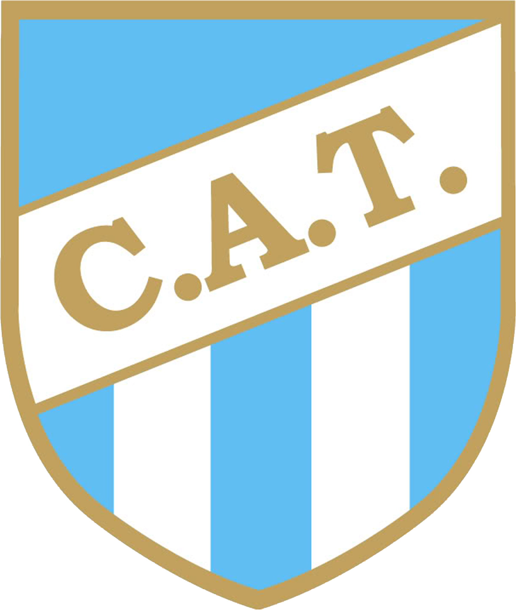

COPA ARGENTINA 2022

2022 COPA ARGENTINA ATLETICO TUCUMAN
 2022 COPA ARGENTINA TALLERES
2022 COPA ARGENTINA TALLERES
 2022 COPA ARGENTINA CENTRAL NORTE (SALTA)
2022 COPA ARGENTINA CENTRAL NORTE (SALTA)
 2022 COPA ARGENTINA VELEZ SARFIELD
2022 COPA ARGENTINA VELEZ SARFIELD